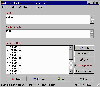

相信许多老用户至今还对NU 8.0中的FileFind记忆犹新吧!这个可以同时替换多个文档中相同文本的工具软件，对我们日常的文字处理工作提供了很大的帮助。进入Windows 95时代之后，FileFind出人意料的从NU软件包中消失了，而一般的文字编辑软件一次又只能替换一篇文档中的文本，这就大大的影响了用户在Windows 95下对文档的查找、替换操作。尽管国外有一些基于Windows 95的专用文本替换软件问世，可它们大多不能正确处理汉字。现在可不一样了，Multi－Replace的出现为我们解决了以上难题。
Multi－Replace是一个Windows
95下的专业文本替换软件，它具有可同时对多个文档中指定的字、词、句进行搜索和替换、正确的处理文本和语法之间的关系、自动对源文档进行备份、替换出错时可自动恢复等优秀功能。更为重要的是，Multi－Replace可正确的处理汉字，这就极大的方便了国内用户的使用。
我们在首次使用Multi－Replace时应执行主菜单上的“Options”命令，对允许进行替换的文档的格式、是否以整个单词为标准进行替换、是否忽略语法等选项进行设置，以达到最好的替换效果。在实际对各个文本的替换过程中，我们只需先在“Find”和“Replace with”框中输入欲替换的原始文本和目标文本（可以为任意范围的单词、汉字、句子，甚至段落，并可回车换行），然后单击“Add files”按钮，将准备进行替换的原始文档添加到“In these files”列表框中，最后单击“Replace”按钮，Multi－Replace就会对用户指定文件逐一进行分析，将这些文档中的原始文本全部替换为目标文本，从而满足了用户的需要。当然，用户若对Multi－Replace替换的结果感到不满意，“后悔”还来得及——单击“Restore”按钮，Multi－Replace就会将替换了的文本恢复至替换之前的状态，使用非常方便。
一般来说，Multi－Replace会直接在原始文档中对文本进行替换，这就可能引发一些意外，因此对原始文档作一个备份以防万一就显得尤为重要了。为此，我们可复选Multi－Replace主菜单中的“Make backups”选项，此后Multi－Replace在替换文档时就会自动保留一个备份文件，保证了数据的安全。需要说明的是，Multi－Replace将备份文件保存在系统文件所在目录中（一般软件都是将备份文件保留在源文件目录中的），且备份文件名是在源文件名（含扩展名）的基础上再加上一个BAK的扩展名（如README.TXT文件的备份文件为README.TXT.BAK），这些都与一般软件的习惯有所不同，广大用户应予注意。
自从有了Multi－Replace之后，本人对中文文档的查找、替换工作就比以前方便多了，替换效果也非常好。你是不是也对它产生了兴趣？那不妨到http://www.net－shopper.co.uk/creative/education/languages/martin下载一个试试，包你满意！
（湖北 荆中院） |